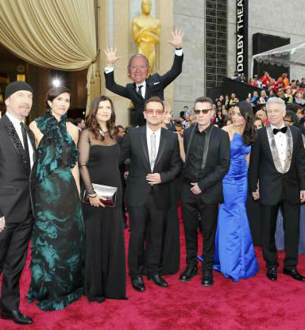
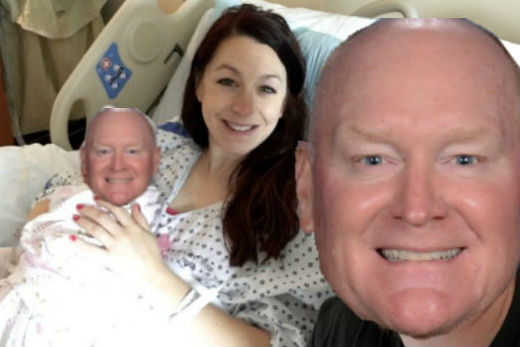
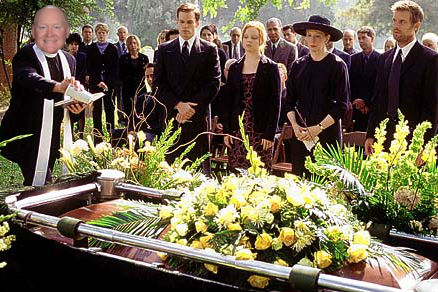

Photobombing 101
About Coach Cook

I grew up in a small town in Kentucky called Shlivergfife. As a child I developed a passion for photobombing with my friends. I took any opportunity I could find to developing my photobombing skills from simple selfies to funerals. I attended Harvard University but got kicked out for photobombing all the yearbook pictures so I finished my degree at Georgia University. With a major in photobombing and modeling I have taught photobombing 101 for 10 years now at Sitka Academy.
Beginning of Course
By the end of this course you will master all the techniques and methods displayed here
Utilize the Three Stages of Life
Birth

Birth provides a wide variety of photobombing oportunities. I have impersonated doctors, fathers, and even babies. The key to birth photobombing is confidence. If you act like you are supposed to be there no one will question you. The method which I used above is extremely difficult but by the end of the course you will be able to photobomb the same photo two times as well.
Marriage
Weddings are always fun and the easiest of the three stages of life. People are generally more forgiving and you are less likley to become arrested. THis image is great example of the importance of timing. In the photo above I had to fall from a three story building inorder to succesfully photobomb this photo.
Funerals

Funerals are the hardest of the three stages of life to photobomb. Often people are less tolerant and you are more likley to be arrested. I have been arested 6 times at funerals and now have a search warant out for my arrest in 3 diffrent states.